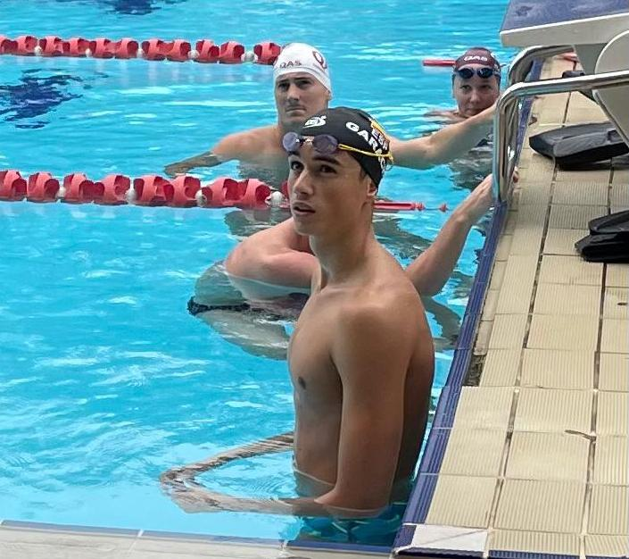
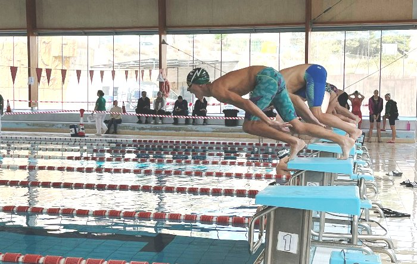
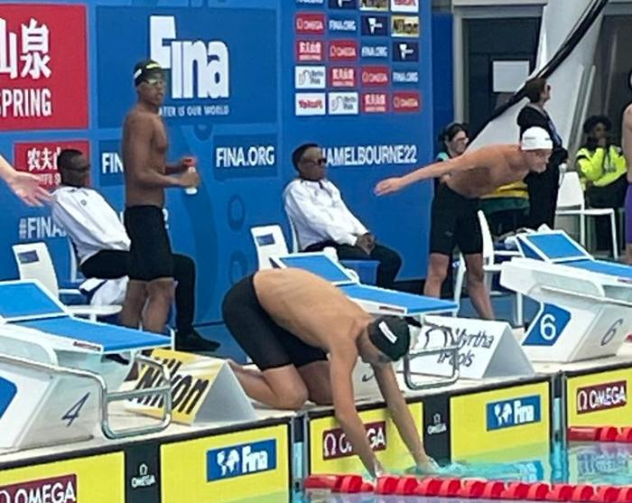

El mejor año en la todavía corta carrera del granadino Carlos Garach concluirá a partir de este martes en el Mundial absoluto en piscina corta de Melbourne. El nadador del Churriana ha sido uno de los 9 deportistas convocados para representar a España en una cita en la que estarán muchos de los mejores nadadores del mundo. Garach competirá el martes en el 1.500 libres y el sábado en el 800 libres. A la promesa nazarí lo dirigirá Xavi Casademont, su entrenador habitual, junto a José Antonio Romacho, en el Centro Especial de Tecnificación Deportiva de las federaciones andaluza y española que hay en Málaga.
La Copa de Andalucía por clubs de natación concluyó en su primera fase con la disputa de las finales provinciales. La mayor parte de los mejores nadadores no faltaron en una competición siempre atractiva por defender todos ellos como equipo a sus clubs. La victoria más amplia la obtuvo en Córdoba el Navial al vencer en Lucena con 646 puntos, siendo segundo el Natación Córdoba con 87. También en la zona occidental, la piscina Diego Lobato acogió la final de Huelva, en la que el CN Huelva ganó con 491,5 puntos, terminando segundo el Fusión Colombino-Lepe con 244,5.
El nadador granadino Carlos Garach (Churriana) firmó una brillante actuación en el Mundial absoluto de natación en piscina de 25 metros que se está celebrando en Melbourne. La joven promesa del año 2004 obtuvo dos plazas de semifinalista en el 800 y el 1.500 libres y batió tres récords autonómicos, uno absoluto y dos de 18 años. Sus resultados fueron los mejores de un nadador andaluz en una prueba individual de un campeonato mundial absoluto en los últimos 9 años. Garach estuvo dirigido en Australia por Xavi Casademont, su entrenador en Málaga en el Centro Especial de Tecnificación Deportiva de las federaciones andaluza y española. Garach destacó especialmente en el 800 libres, prueba en la que logró la undécima plaza con un tiempo de 7.44.53 minutos. El tiempo que marcó le sirvió para batir el récord andaluz absoluto en casi 8 segundos, pues lo ostentaba Marcos Rodríguez (Churriana) con 7.52.34 desde el 2016. También rebajó la Mejor Marca Territorial de 18 años que poseía el propio Rodríguez con 7.54.54 desde el 2015. Su crono le valió también para situarse en el segundo lugar del ranking nacional de todos los tiempos, solo superado por Marc Sánchez que tiene el récord español absoluto desde el 2014 con un tiempo de 7.37.51.
